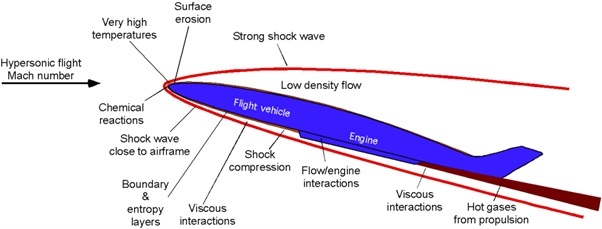

<!DOCTYPE html>

<html>

  <head>
 


  </head>

  </html>
  <h1><b>ENG0018 Computer Laboratory 2024/25</b></h1>
  <h2>Student URN: 6851047</h2>
    <hr>
    <h2 style="font-family:Times New Roman;"><b> Conference Paper: Advancing Hypersonic Flight Through Computational Fluid Dynamics (CFD) </b></h2>
      <hr>

    <!style for tables>
    <style>
      table {
          font-family: Times New Roman;
          border-collapse: collapse;
          width 30%;

        } 

        td, th {
            border: 1px solid #dddddd;
            text-align: left;
            padding: 8px;
        }

      tr:nth-child(even) {
         background-color: #dddddd;
      }
   
        </style>

    <style>
     p.ex1 {
       margin-left: 250px;
  }
    </style>
     </head>

  <meta name="viewport" content="width=device-width, initial-scale=1">
  <link rel="stylesheet" href="https://emea01.safelinks.protection.outlook.com/?url=https%3A%2F%2Fwww.w3schools.com%2Fw3css%2F4%2Fw3.css&data=05%7C02%7C%7Cf9b8dd8d0c254ac2d55308dd1594d3e7%7C84df9e7fe9f640afb435aaaaaaaaaaaa%7C1%7C0%7C638690451165858648%7CUnknown%7CTWFpbGZsb3d8eyJFbXB0eU1hcGkiOnRydWUsIlYiOiIwLjAuMDAwMCIsIlAiOiJXaW4zMiIsIkFOIjoiTWFpbCIsIldUIjoyfQ%3D%3D%7C0%7C%7C%7C&sdata=nrStS0vTIg99kx2yNM%2Ba0gTmc18WO4b9%2F7j0uOJOppU%3D&reserved=0">
  <style>
   .mySlides {display:none;}
  </style>
  <body style="backgroumd-color:#ADD8E6;margin-left:50px;">
  </style>


    <!table of contents>
    <table>

      <tr>
        <th><h3>Table of contents</h3></th>
      </tr>
     
      <tr>
        <td><a href="#Abstract">Abstract</td>
      </tr>
     
      <tr>
        <td><a href="#Introduction">Introduction</td>
      </tr>
     
      <tr>
        <td><a href="#Main Body">Main Body</td>
      </tr>
        <tr>
     <td><a href="#Conclusion">Conclusion</td>        
      </tr>
      <tr>
     <td><a href="#References">References</td>        
      </tr>
    </table>


  <hr>
    <h3>
      <h3 id="Abstract">Abstract</h3>
      <p class="ex1" >
      <pre>
      
      Advancing hypersonic flight (flight at speeds greater than Mach 5) can undeniably present significant challenges due to extreme aerodynamic forces, heat loads, and turbulent flow
        conditions. In this regard, CFD has become a vital tool in addressing these issues by enabling detailed simulations of airflow, shockwave interactions, and heat transfer at hypersonic 
        speeds. CFD enables the optimization of vehicle designs and performance predictions before physical prototypes are built, thus reducing costs and speeding up the development process. 
        This article describes how CFD is being used to address some of the most important challenges involved in hypersonic flight: aerodynamic optimisation, thermal protection, and turbulence modelling. 
        It also highlights recent advancements in CFD techniques and their growing role regarding hypersonic vehicle design-drive innovation that will shape the future of aerospace technologies.
      </pre>
    </p>

<hr>
      <video src="ENG0018 Presentation new.mp4" width="800" height="450" controls>
      </video>
<hr>
 
<h3 id="Introduction">Introduction</h3>
      <P class="ex1">
       
        <pre id="Introduction_InText">
      Hypersonic flight is defined as the ability to fly at exceptionally high speeds - exceeding Mach 5  <a href="#(George A., 2018)"><I>(George A., 2018)</I></a>, 
          and it has always been one of the most sought-after goals in modern aerospace engineering. Its potential applications are endless and vary from high-speed travel to 
          aiding advanced military systems. However, achieving hypersonic flight in an effective, yet safe, manner poses many challenges. This is because hypersonic vehicle will 
          distort in flight due to the extreme aerodynamic and thermal loads that they are subjected to <a href="#(Neely A., 2022)"><I>(Neely A., 2022)</I></a>.  In order to be able 
          to combat these difficulties in a manner that is both cost-efficient and practical, advanced methods are needed.
    It is here that Computational Fluid Dynamics into action. It allows the engineers to model the advanced fluid dynamics that would be encountered at hypersonic speeds, for instance 
          shockwave interactions, heat transfer, and turbulent flow patterns. Computational Fluid Dynamics helps maximise the efficiency of vehicle designs, as well as improve the accuracy
          of predictions. This, in turn, greatly reduces the reliance on other forms of testing, such as wind tunnel techniques or free flight testing – which are both costly and not as effective. 
          This article will discuss how Computational Fluid Dynamics aids the process of advancing hypersonic flight and focus on how it addresses the aerodynamic and thermal challenges that are 
          associated with hypersonic speeds - shedding light on how computational methods are shaping the future of aerospace technology.
          
    </pre>
    </p>
     
  <h3 id="Main Body">Main Body</h3>
<p class="ex1">
    <pre id="MainBody_InText">
      As aforementioned, at speeds greater than Mach 5, vehicles are affected by extreme aerodynamic forces, high temperatures, and complex fluid dynamics. Shockwaves are formed due to the rapid 
      compression of air in front of vehicles, and this is one of the main difficulties associated with hypersonic speed. These shockwaves cause the boundary layer to separate and leads to an abrupt 
      rise in wall-heat transfer, degraded performance of control surfaces, and sometimes disastrous accidents . This […] is accompanied with amplifications of the heat flux and drag <a href="#(Jiang H., Liu J., 
      Luo S., Huang W., Wang J., Liu M., 2021)"><I>(Jiang H., Liu J., Luo S., Huang W., Wang J., Liu M., 2021)</I></a>, as well as a loss of control of the vehicle. The intensity of the shockwaves themselves can vary, 
      and this depends on numerous factors, including the shape and speed of the hypersonic vehicle, but also atmospheric conditions. This therefore makes designing an efficient hypersonic vehicle notably challenging.

      Further to this, the compression of air in front of the vehicle can generate extreme temperatures – this means that the surface of the vehicle experiences intense thermal loads. This intense heat at 
      such high speeds can degrade materials, which creates the need to develop advanced heat shields and protection systems. Moreover, the transition from laminar to turbulent flow becomes more pronounced as 
      the vehicle accelerates through the hypersonic conditions. In such high-speed flows, turbulence can have a major impact on both aerodynamic forces and heat transfer. Predicting and controlling these turbulent 
      flows is a significant challenge, requiring sophisticated computational tools to model and optimise vehicle performance. These problems that engineers face when designing hypersonic vehicles, outlined in 
      Figure 1 <a href="#(Leishmann J., 2018)"><I>(Leishmann J., 2018)</I></a> show that the solutions not only require innovative materials but also an extensive knowledge of fluid dynamics and heat transfer. These 
      are the areas where Computational Fluid Dynamics has become indispensable.

        
          <I>Figure 1 </I>

      Computational Fluid Dynamics has undoubtedly become a key tool in addressing the complex challenges of hypersonic flight. In this context, Computational Fluid Dynamics simulations are invaluable for predicting 
      the behaviour of airflows around vehicles traveling at extremely high speeds. These simulations help engineers understand the complex interactions between shock waves, boundary layers, and high-temperature effects 
      that occur during hypersonic flight <a href="#(Nogueira D., 2024)"><I>(Nogueira D., 2024)</I></a>. Due to this capability, there is a reduced need for expensive wind tunnel testing, and thus the design process of hypersonic 
      vehicles is accelerated.

      Computational Fluid Dynamics also has the benefit of optimising vehicle design. Hypersonic vehicles have a delicate balance of low drag, stability, and thermal management. Computational Fluid Dynamics helps designers 
      virtually test various vehicle configurations-shapes of the airframe, nose cone, wings, and heat shields-to make sure that they will perform efficiently and remain stable at high speeds. It therefore helps to minimise drag 
      and maximise aerodynamic performance by analysing shockwave interactions around the vehicle.
      
      Further to this, Computational Fluid Dynamics is vital when it comes to thermal management. Extremely high temperatures at hypersonic speed create massive heat flux on the vehicle's surface. The Computational Fluid Dynamics 
      can model these thermal stresses, and this in turn allows engineers to design efficient thermal protection systems including heat-resistant materials and ablative coating so that the vehicle can bear the strenuous conditions of 
      hypersonic flight.

      CFD also allows for more realistic material behaviour predictions in extreme conditions. By simulating high-speed airflow interaction with various materials, engineers can test how the materials will behave under thermal stress 
      and the resulting aerodynamic forces. This helps to select the best materials that can bear high temperatures and maintain structural integrity. Further, CFD allows the testing of different cooling techniques and heat shield designs 
      for the optimization of durability and efficiency. As research and development in hypersonic flight move forward, integrating machine learning algorithms with the CFD models will grant even further speed and accuracy to simulations, 
      thus enabling faster development and refinement of hypersonic technologies.

    </pre>
</p>
     
<h3 id="Conclusion">Conclusion</h3>
      <P class="ex1">
        <pre id="Conclusion_InText">
      In conclusion, Computational Fluid Dynamics is an important factor in the advancement of hypersonic flight, as it allows engineers to understand airflow, shockwaves, heat transfer, and turbulence at extreme speeds. Computational Fluid 
      Dynamics allows us to further optimise vehicle designs, as well as predict performance before physical testing, which increases the speed of development and safety.
      With the development of higher-resolution solvers and machine learning integrated into Computational Fluid Dynamics techniques, the tool grew in power to address the issues of hypersonic flight. Moreover, as computational power continues 
      to increase, Computational Fluid Dynamics will undeniably continue to be crucial in designing the next generation of hypersonic vehicles. It will drive innovations in the design of vehicles, thermal protection, and flight stability toward practical, 
      safe hypersonic flight for military and commercial applications in the future.

        </pre>

<hr>
 <h3 id="References">References</h3>
      <p>
        <pre>
<a id="(George A., 2018)">George A., 2018 </a>. BAE Systems | International. (n.d.). What is hypersonic flight? [online] [Accessed 6 Dec. 2024]
          <a href="https://www.baesystems.com/en/blog/what-is-hypersonic-flight" target = "_blank">Webpage available here</a>

<a id="(Neely A., 2022)">Neely A., 2022</a>. Uq.edu.au. (2022). The biggest challenges to hypersonic flight – and how they’re being tackled. [online] [Accessed 6 Dec. 2024]
          <a href="https://mechmining.uq.edu.au/article/2022/10/biggest-challenges-hypersonic-flight-%E2%80%93-and-how-they%E2%80%99re-being-tackled" target = "_blank">Webpage available here</a>

<a id="(Jiang H., Liu J., Luo S., Huang W., Wang J., Liu M., 2021)">Jiang H., Liu J., Luo S., Huang W., Wang J., Liu M., 2021</a>. Jiang, H., Liu, J., Luo, S., Huang, W., Wang, J. and Liu, M. (2022). Thermochemical non-equilibrium effects on hypersonic shock wave/turbulent boundary-layer interaction. Acta Astronautica, [online] 192, pp.1–14 [Accessed 6 Dec. 2024]
          <a href="https://www.sciencedirect.com/science/article/pii/S0094576521006457#abs0010" target = "_blank">Webpage available here</a>

<a id="(Nogueira D., 2024)">Nogueira D., 2024</a>. https://aerothermalsolutions.co/en/author/damaris (2024). Advanced Simulation for Hypersonic Vehicles with CFD++. [online] Aerothermal Solutions. Available at: https://aerothermalsolutions.co/en/hypersonic-speed-vehicles-cfd/ [Accessed 6 Dec. 2024]
          <a href="https://aerothermalsolutions.co/en/hypersonic-speed-vehicles-cfd/#:~:text=CFD%20involves%20the%20use%20of,traveling%20at%20extremely%20high%20speeds" target = "_blank">Webpage available here</a>
        </pre>
      </p>

<hr>
<p id="date&time"></p>
<script>
//Javascript to display the date and time on my webpage
const d = new Date();
document.getElementById("date&time").innerHTML=d;
</script>
 
<!-- //////////////////////////////////////////////////////////////////////////////// -->
  <!-- ////////////////////////////// Adding last update ////////////////////////////// -->
  <!-- //////////////////////////////////////////////////////////////////////////////// -->
    <!-- Last commit time display -->
<body>
  <div id="last-updated">Loading last update time...</div>
<!-- Verify Button -->
<button onclick="verifyLastUpdatedTime()" style="display: block; margin: 10px auto; padding: 8px 16px;">
    Verify Last Modified Time
</button>
<script>
    async function getLastUpdatedTime() {
        const username = ’6851047’;
        const repo = 'FY6851047’;
      
        const url = `https://api.github.com/repos/${6851047}/${repo}/commits`;
        try {
            const response = await fetch(url, {
                method: 'GET',
                headers: {
                    'Accept': 'application/vnd.github.v3+json',
                }
            });
            if (!response.ok) {
                throw new Error(`Error fetching data: ${response.status} - ${response.statusText}`);
            }
            const commits = await response.json();
            if (commits && commits.length > 0) {
                const lastCommitDate = new Date(commits[0].commit.committer.date);
              
                // Displaying the time on load
                document.getElementById('last-updated').innerText = `Last Modified Time: ${lastCommitDate.toLocaleString()}`;
            } else {
                document.getElementById('last-updated').innerText = 'No commits found in the repository.';
            }
        } catch (error) {
            console.error('Error fetching the last updated time:', error);
            document.getElementById('last-updated').innerText = 'Error fetching update time. Please check the repository details.';
        }
    }
    // Function to verify the last update time by re-fetching it from the API
    async function verifyLastUpdatedTime() {
        document.getElementById('last-updated').innerText = 'Verifying...';
        await getLastUpdatedTime();
        alert("Last modified time has been successfully verified from GitHub API.");
    }
    // Initial load to display the time on page load
    window.onload = getLastUpdatedTime;
</script>


 <!-- //////////////////////////////////////////////////////////////////////////////// -->
  <!-- ////////////////////////////// Word count function ////////////////////////////// -->
  <!-- //////////////////////////////////////////////////////////////////////////////// -->
<!-- Placeholder for total word count -->
<p id="totalWordCount"></p>
<hr>
<script>
  // Function to calculate and display word count for a specified section
  function displayWordCount(sectionId, outputId) {
    // Get the text content from the specified section
    const text = document.getElementById(sectionId).textContent;
    // Split text into words based on spaces and filter out any empty strings
    const wordArray = text.trim().split(/\s+/);
    // Count the words
    const wordCount = wordArray.length;
    // Return the word count for summing purposes
    return wordCount;
  }
  // Function to calculate and display total word count from selected sections
  function displayTotalWordCount() {
    // Calculate word count for each section and accumulate the total
    const IntroductionCount = displayWordCount("Introduction_InText");
    const MainBodyCount = displayWordCount("MainBody_InText");
    const ConclusionCount = displayWordCount("Conclusion_InText");
    // Calculate the sum of all selected sections
    const totalWordCount = IntroductionCount + MainBodyCount + Conclusion;
    // Display the total word count
    document.getElementById("totalWordCount").innerText = `Total word count: ${totalWordCount}`;
  }
  // Run the function for specific sections and display total count when the page loads
  window.onload = displayTotalWordCount;
</script>
 
</body>
</html>
